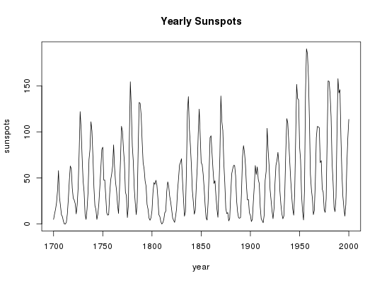
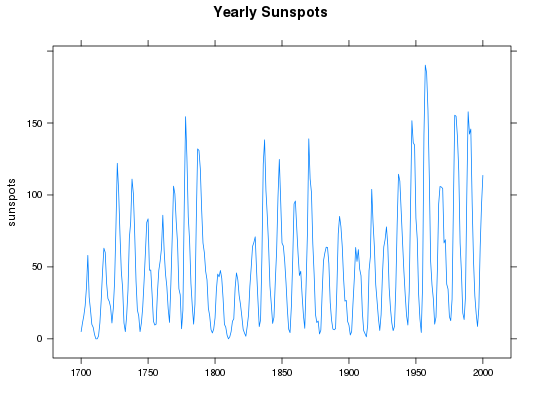
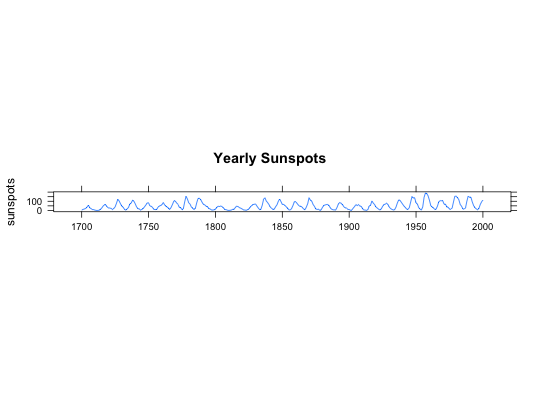

Data for Example 1.7
A data frame with 301 observations on the following 2 variables.
Kitchens, L. J. (2003) Basic Statistics and Data Analysis. Duxbury
str(Sunspot)#> 'data.frame': 301 obs. of 2 variables: #> $ year : int 1700 1701 1702 1703 1704 1705 1706 1707 1708 1709 ... #> $ sunspots: num 5 11 16 23 36 58 29 20 10 8 ... #>attach(Sunspot)The following object is masked from package:datasets: sunspotsplot(year,sunspots,type="l",main="Yearly Sunspots") # Using standard plotlibrary(lattice) xyplot(sunspots ~ 1700:2000, xlab = "", type = "l",main="Yearly Sunspots")xyplot(sunspots ~ 1700:2000, xlab = "", type = "l", aspect="xy", main="Yearly Sunspots")detach(Sunspot)